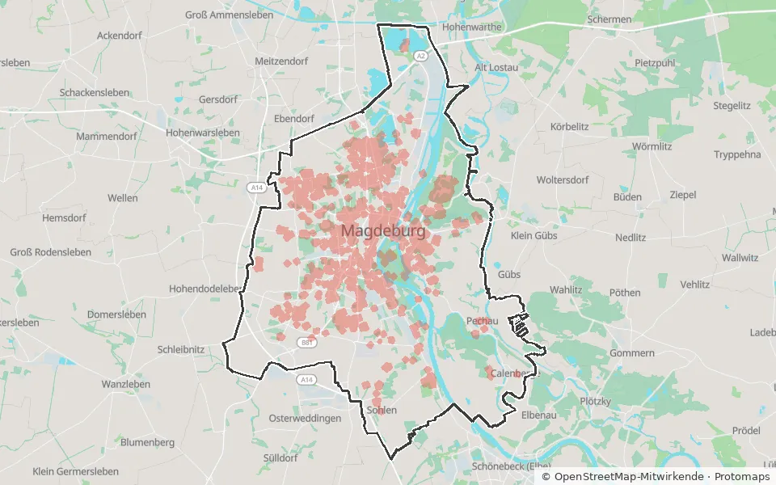
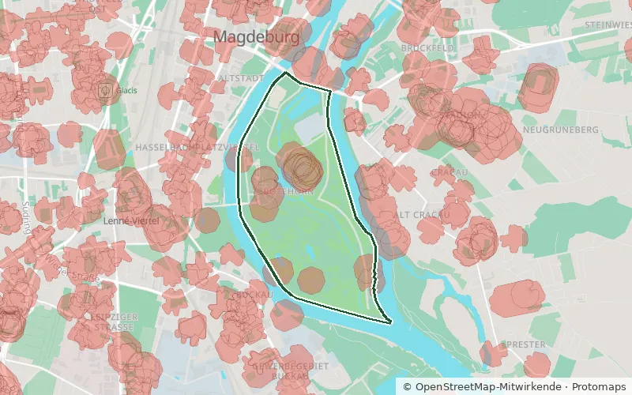
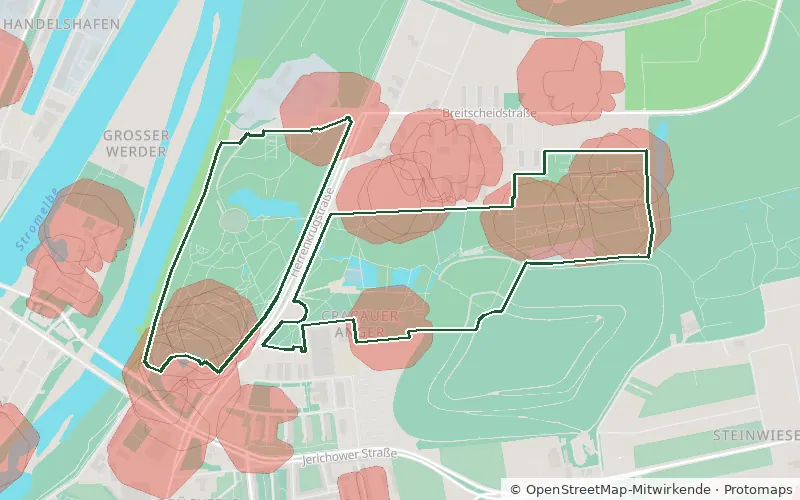
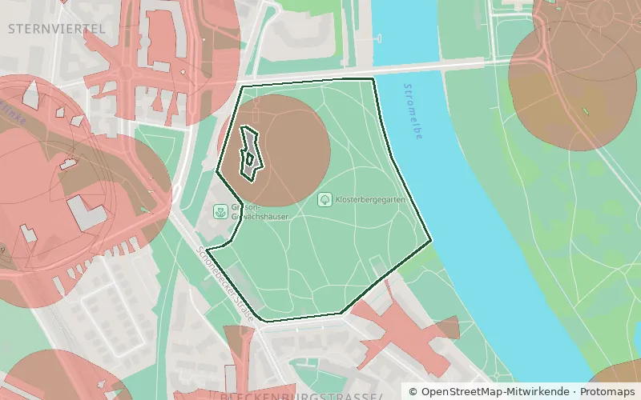
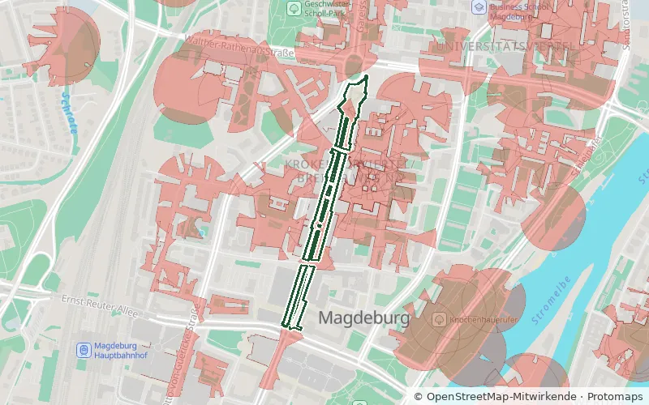
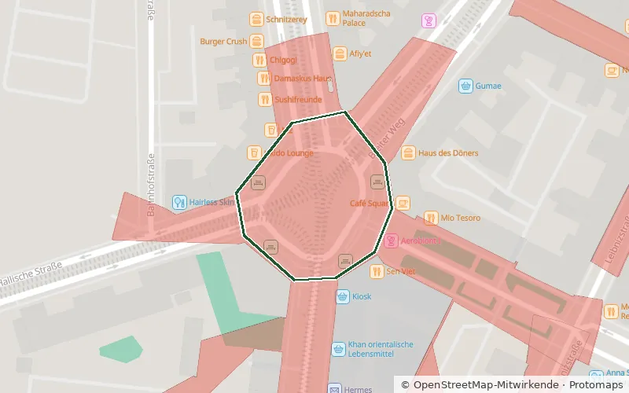
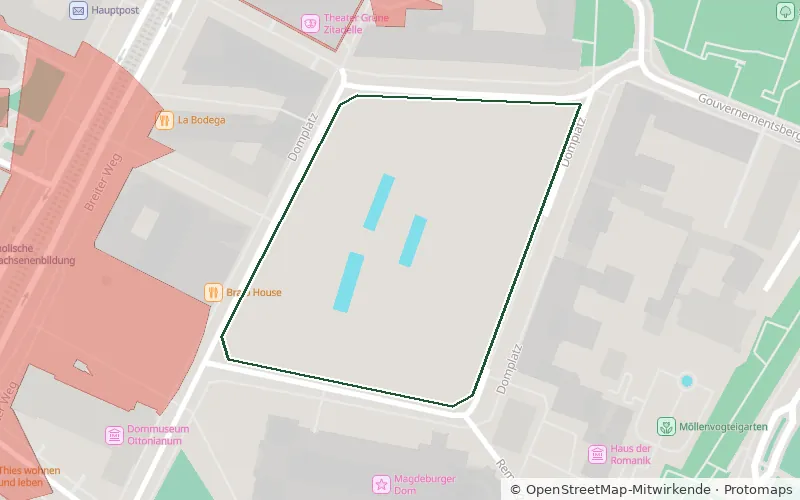

In Magdeburg ist öffentliches Kiffen auf 20 km² verboten, das sind 9,8 % der Stadtfläche von 202 km². Grund sind 1 029 Einrichtungen wie Schulen und Spielplätze: In ihrer Sichtweite, bis 100 Meter vom Eingang und ohne Gebäude dazwischen, verbietet § 5 KCanG den Konsum. Dazu kommen die Fußgängerzone von 7 bis 20 Uhr und überall die Gegenwart von Minderjährigen.
Die Elbe teilt die Stadt, und an ihr liegt kaum eine Zone: Auf einem 100 Meter breiten Streifen Land entlang der Flüsse sind es 5 %. Bußgelder verhängt in Sachsen-Anhalt nicht die Stadt, sondern das Land (siehe Bußgelder in Sachsen-Anhalt).

Woher die Zonen in Magdeburg kommen
| Einrichtung | Anzahl | Zonenfläche |
|---|---|---|
| Schulen | 96 | 4,1 km² |
| Kitas und Kindergärten | 102 | 3,1 km² |
| Kindertagespflege | 8 | 0,2 km² |
| Spielplätze | 288 | 6,2 km² |
| Kinder- und Jugendeinrichtungen | 42 | 1,2 km² |
| Sportstätten | 493 | 11,2 km² |
Jede Art für sich gezählt, Überlappungen also mehrfach. Anbauvereinigungen nur, soweit in OpenStreetMap eingetragen.
Die meisten Zonen gehen auf die 493 Sportstätten zurück, danach auf die 288 Spielplätze. Auf den öffentlichen Spielplätzen der Stadt verbietet die Grünanlagensatzung außerdem Alkohol „und sonstige berauschende Mittel“ und das Rauchen, bis zu 5.000 Euro (Grünanlagensatzung). Die Gefahrenabwehrverordnung nennt Cannabis nicht (Gefahrenabwehrverordnung).
Rotehornpark und Elbauenpark
Der Rotehornpark auf der Elbinsel ist 213 ha groß; davon liegen 18 % in einer Zone, um 21 Sportanlagen und drei Spielplätze. Im Elbauenpark sind es 37 %, mit sieben Spielplätzen und fünf Sportanlagen, im Klosterbergegarten 24 %. Von der Elbuferpromenade liegen 23 % in einer Zone.



Innenstadt
Eine Liste der Fußgängerzonen hat die Stadt nicht veröffentlicht. Belegt ist der Breite Weg zwischen Großer Steinernetischstraße und Julius-Bremer-Straße, „als Fußgängerzone (Zeichen 242.1) ausgeschildert“ (Polizei Magdeburg, August 2025). Dort gilt von 7 bis 20 Uhr Konsumverbot; blau sind die Fußgängerbereiche aus OpenStreetMap, und das ist mehr als der belegte Abschnitt.
Vom Breiten Weg liegen außerdem 55 % in einer Sichtweiten-Zone. Alter Markt (0 %), Ulrichplatz und Domplatz (0 %) liegen außerhalb, der Hasselbachplatz ganz in einer Zone (100 %).



Auf dem Weihnachtsmarkt am Rathaus verbietet die Marktordnung nach Angabe des Veranstalters, Cannabis zu verkaufen und zu konsumieren (dpa, November 2024).
Hochschule
Hochschulen sind nach § 5 KCanG keine Verbotsorte. Die Hochschule Magdeburg-Stendal verbietet in ihrer Hausordnung „den Konsum und den Handel von psychoaktiven Betäubungsmitteln“ (Hausordnung); ihr Gelände liegt zu 53 % in einer Zone, um fünf Sportanlagen und einen Spielplatz.
Was sonst noch in Magdeburg gilt
In Sachsen-Anhalt ahndet nicht die Stadt Verstöße gegen die Konsumverbote, sondern eine Landesbehörde; Polizei und Ordnungsamt geben sie dorthin ab. Die Landesregierung nennt bis zu 500 Euro, etwa vor Schulen und Spielplätzen, und bis zu 1.000 Euro in Gegenwart von Minderjährigen (Staatskanzlei, September 2024). Von August 2024 bis März 2026 hat das Land 18 Bußgeldbescheide erlassen, die meisten wegen Konsum an verbotenen Orten (dpa, März 2026). Eigene Verbotszonen für Cannabis hat Magdeburg nicht (Stand 27. November 2026).
Häufige Fragen zu Magdeburg
Wo darf man in Magdeburg kiffen?
Nach § 5 KCanG außerhalb der roten Flächen, etwa in großen Teilen des Rotehornparks (18 % in einer Zone). Nicht auf öffentlichen Spielplätzen, tagsüber nicht in der Fußgängerzone, nie in Gegenwart von Minderjährigen. Weiß heißt nicht sicher erlaubt: Hecken, Bäume und fehlende Einrichtungen kennt die Karte nicht.
Wie genau ist das?
Täglich aus OpenStreetMap gerechnet, mit Gebäuden als Sichthindernis; die Zahlen hier sind vom 27. November 2026. Eine Orientierungshilfe, keine Rechtsauskunft (wie gerechnet wird).
Fehlt eine Einrichtung? Korrekturen in OpenStreetMap stehen am Tag darauf auf der Karte; bitte nur eintragen, was es vor Ort gibt.